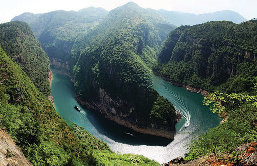
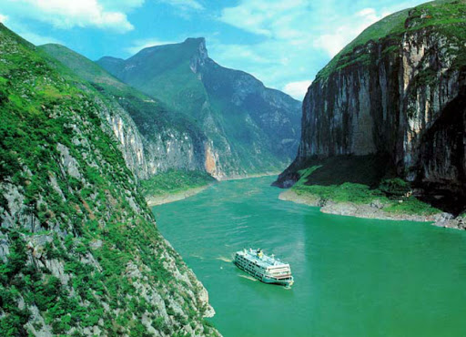
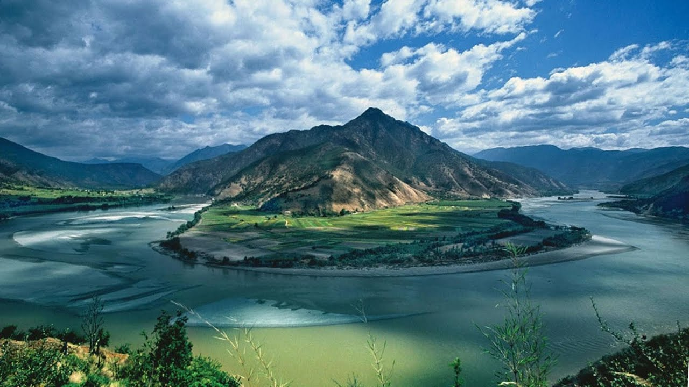
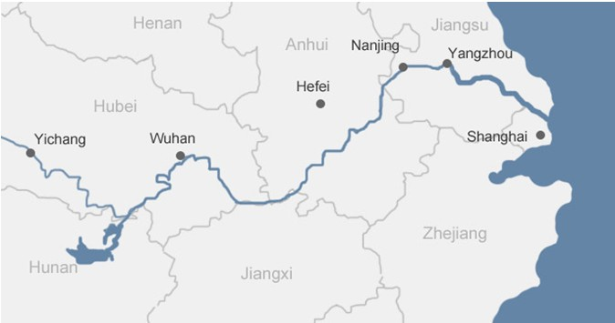

Янцзы
Главная страница


Янцзы — самая длинная и многоводная река Евразии, третья в мире по полноводности и четвёртая в мире по длине. Протекает по территории Китая, имеет длину около 6300 км (также это самая длинная в мире река, протекающая по территории одного государства), площадь бассейна — 1 808 500 км². Впадает в Восточно-Китайское море.
Бассейн Янцзы покрывает примерно пятую часть территории Китая, там проживает около трети всех жителей страны. Наряду с Хуанхэ, Янцзы является важнейшей рекой в истории, культуре и экономике Китая. Процветающий регион Дельта Янцзы производит до 20 % ВВП Китая. ГЭС «Три ущелья» на реке Янцзы является крупнейшей гидроэлектростанцией в мире. Река является важной физической и культурной разделительной линией между Севером и Югом Китая.
Жители Китая уважительно называют Янцзы, как и Хуанхэ, «мать-рекой» (кит. упр. 母亲河, пиньинь mǔqīnhé). В китайский язык также вошло выражение «задняя волна Янцзы подталкивает переднюю волну» (кит. упр. 长江后浪推前浪, пиньинь Cháng Jiāng hòulàng tuī qiánlàng), образно обозначающее постоянные изменения человека или объекта, когда старое сменяется новым.
Длинна: 6300 км
Площадь: 1 808 тыс. км²
Расход воды: 31 900 м³/сек

РЕКА ЯНЦЗЫ НА КАРТЕ